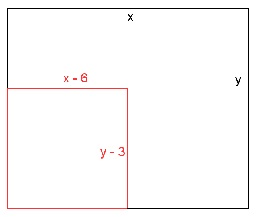

Lineare Gleichungssysteme Aufgabe 96 Verkürzt man die längere Seite eines Rechtecks um 6 cm und die kürzere um 3 cm, so entsteht ein Quadrat, das 126 cm² kleiner ist als das Rechteck. Wie lang sind die Seiten des Rechtecks in cm? x längere Seite in cm y kürzere Seite in cm längere Seite um 6 cm verkürzt x - 6 kürzere Seite um 3 cm verkürzt y - 3  Quadrat hat gleich große Seiten x - 6 = y - 3 |y x - y - 6 = -3 |+6 x - y = 3 (1) Flächeninhalt des Rechtecks x * y Flächeninhalt des Quadrates (x - 6)(y - 3) Das Rechteck ist größer x * y = (x - 6)(y - 3) + 125 xy = xy - 3x - 6y + 18 + 126 |-xy 0 = -3x - 6y + 144 | +3x 3x = -6y + 144 | +6y 3x + 6y = 144 (2) (1) * 6 + (2) 6x - 6y = 18 3x + 6y = 144 9x = 162 |:9 x = 18 cm x = 18 in (1) eingesetzt 18 - y = 3 |+y 18 = y + 3 |-3 y = 15 cm